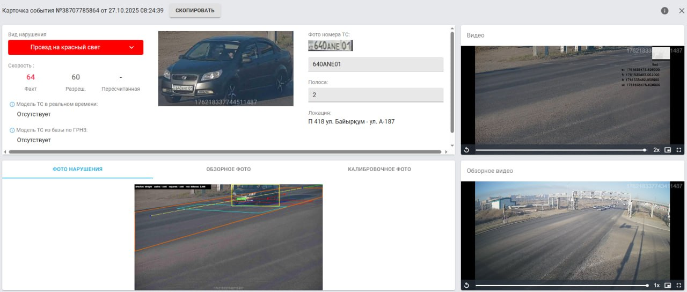
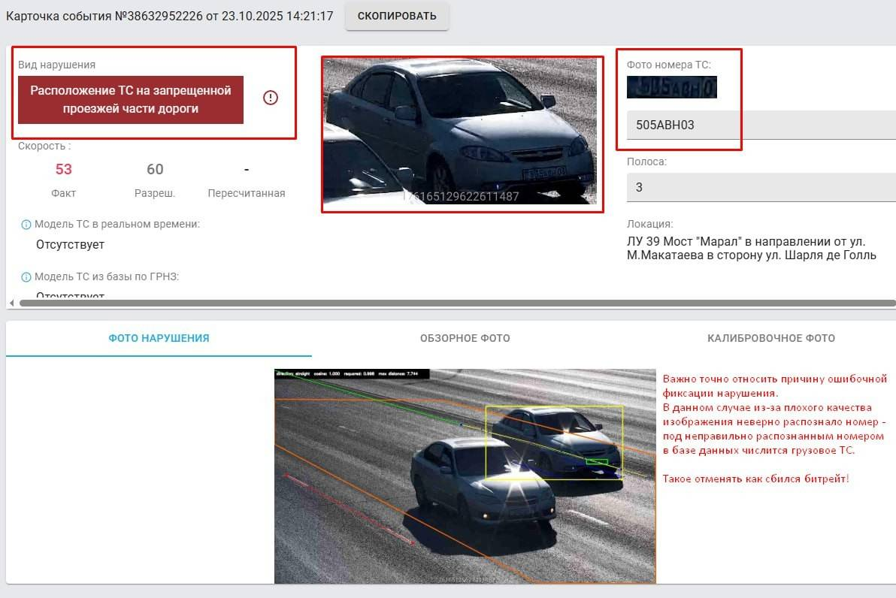
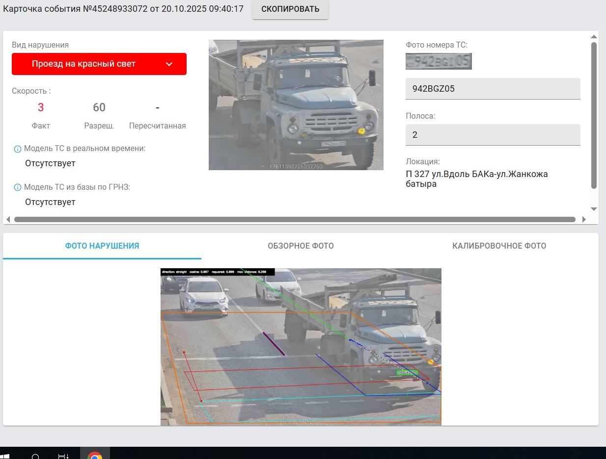
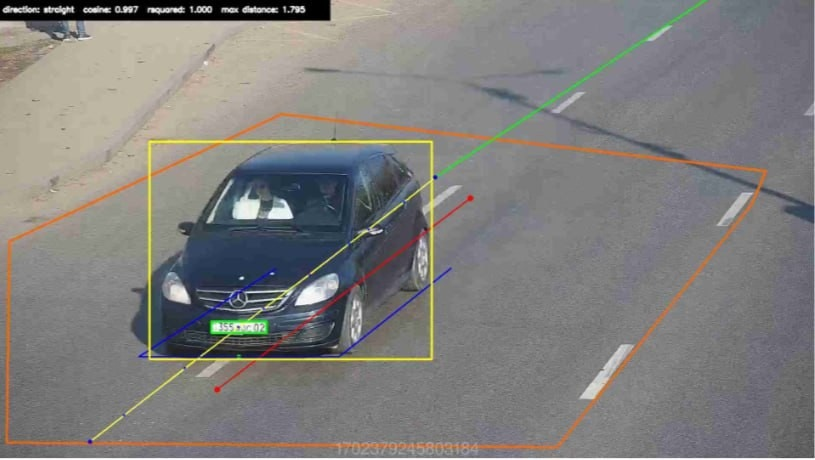

Битое видео
Видео прерывается, битые кадры или искажается картинка
Не ГРНЗ
Посторонние надписи, бортовой номер автобусов/такси, имена на лобовом стекле и
т.п.


Неверное определение ГРНЗ
Когда ошибочно распознало ГРНЗ и присвоило вид нарушения М3 или грузовые, и
другие случаи где мы не можем изменить ГРНЗ вручную и отправить.


Некорректные данные контроллера
Когда штрафует если отключен светофор (ничего не горит, без питания), когда
желтый мигающий.


Нет факта нарушения
Когда нет технических ошибок. Если автомобиль попадает в маски при перестроении с
полосы или с проезжей части, откуда разрешено движение.
Нечитаемый номерной знак
Стертый нечитабельный ГРНЗ


Ошибочные грузовые/М3
Когда ошибочно присвоило категорию М3/Грузовые легковому авто или джипу.


Отсутствие разметок на проезжей части
Когда стерлась дорожная разметка или после замены асфальта.


Ошибки в линии трека
Сильные отклонения желтой линии с маленькими синими точками между двумя жирными
синими. Либо если 1 отрезок между двумя жирными синими точками.


Перекрытие разметки
Когда на протяжении всего видео из-за перекрытия калибровочных параметров
габаритными ТС. Невозможно убедиться в пересечении сплошной, проезда стоп линии. Не видно красной линии
масштаба на всем протяжении основного видео, а не в одном фото нарушения.


Погодные условия
Мутное изображение на видео из-за снега, дождя, тумана, дыма. Когда шатает камеру
или столб из-за сильного ветра или землетрясения. и т.д. и т.п.




Помехи перед камерой
Любой объект который загораживает светофор или ТС нарушителя и по этой
причине неправильно распознал ГРНЗ (ветки, птицы, другие машины в потоке, столбы, знаки, светофоры и т.д.
и т.п.)


Проблемы с определением проекции ТС
Высоко расположенный ГРНЗ на габаритных ТС (на лобовом, на крыше и т.д.) по виду
нарушения превышение скорости. Когда синяя маска отходит от габаритов ТС - находится слишком высоко,
меньше габаритов или сильно больше габаритов.


Сбился фокус
Размытое мутное изображение ТС и ГРНЗ


Сбился битрейт
Плохое качество видео, большая пикселизация, неразборчиво виден ГРНЗ либо вообще
не распознать.



Сбился лучший кадр
Обрезанное фото для предписания когда ТС видно не полностью, не видно ГРНЗ, или
видна только половина ТС. Либо когда на основном видео хорошо видно номер, но на фото ТС выбрало
наихудший кадр с неразборчивым ГРНЗ.



Съехавшие настройки камеры
Когда какие-либо настройки камеры сбились и не вернулись в исходное состояние.
Например ч/б изображение днем и наоборот ночью не перешла в ч/б. Замедленное видео. Когда слишком
затемненное изображение. Когда цветовые настройки сбились. Либо когда камера на месте, но калибровочные
параметры неправильно настроены и спамит ошибочными нарушениями. (завышает скорость, или маски
стоп/красный не на месте)


Съехала камера
Когда не на месте основная, обзорная или светофорная камера.



Рассинхрон
Когда момент фиксации нарушения на основном и на обзорном видео различаются (на
обзорном видео нет нарушителя). Либо когда светофорная камера с контроллером отстают по времени с
основной и обзорной камерой. (штрафует на зеленый)

Ведомые ТС
Когда машина без водителя на эвакуаторе/автовозе/прицепе. Либо когда на тросу
буксируют или толкают машину.